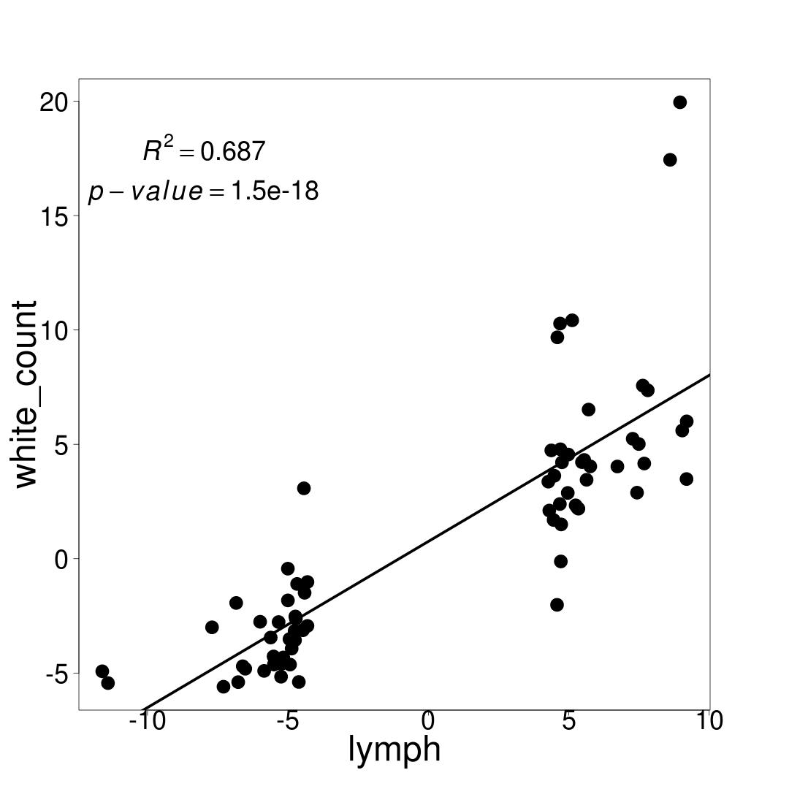

For Lymphocyte count-related genes found by TWAS, plot their TWAS Z-scores in lymphocyte counts vs. white blood cell, red blood cell count, platelet count. Also do a heat-map to summarize the Z-scores of Lymphocyte count related genes vs. traits.
Scatter plots

Heat map